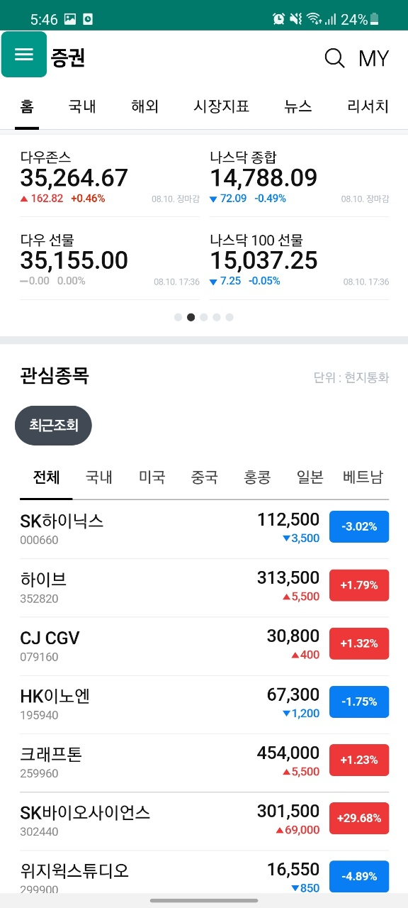

The first thing I do when I wake up is to check the stock market. Stock market is an interest that I gained during my first year in college. What introduced me to the stock market was, surpisingly or not, Covid19.
The immediate collapse of the economy was reflected in the stock market and people were screaming for help to secure their money. In South Korea, we call small investors as "ants". As one of the ants, I started
to learn various details in the stock market. This included lower and upper limit price, graphical analysis, market capitalization and more. After months of studying and carefully choosing the corporations to invest,
I finally marched in to the market with approximately $2000. However, the result was a tragic fail. Nonetheless, I wouldn't say it is an absolute fail. I knew the importance of diversified investment and spread my seed money
to multiple sectors including technology, gaming, and Covid-related bio coporations. My rationale for these choices included Korea's advanced tech corporations such as Samsung and LG, my sheer interest in gaming, and
my anticipation in the rise of bio companies to resolve the pandemics. While my technology and gaming companies were doing fairly well, I realized the downfall of bio companies. I expected the rise of the bio companies
due to the sooner or later vaccinations to prevent Covid19. After analyzing the reasons behind why my investment has failed, I learned the importance of the values of information. For example, it was a wide-known information
that Korea would begin its vaccination process within a week. Thus, this piece of information is relatively less valuable. Instead, it would have been way more valuable to obtain the information that fewer people know. This
includes the bio company that would create its own functional vaccines. Being interested in the stock market has been a huge change in my life. I started to read the news more frequently and imagine what the world is going to value
in the future.
My interest in philosophy sparked when I attended Present Moral Problems class in my second semester of my freshman year. While I had interest in moral problems since high school, I never had the chance to share my opinions nor
learn professional analsys from various philosophers. Starting from broader subject of moral responsibility to socially linked subjects such as abortion, I read articles and papers that had conflicting ideas. What made philosophy so
interesting is the fact that I had difficulty in settling what my perception is in certain problems. For instance, I encountered the trolley dilemma. This famous dilemma draws a situation in which you are given the choice to save 5 people
lying on the trail by twisting the direction of the trail to kill one person. One of the approaches to this problem is to simply compare the overall consequences. Obviously saving five people over one person sounds numerically better; thus,
one could choose to twist the direction of the trolley. At first, I agreed with this consequentialist approach. I thought that by saving five people over one person, you are making a morally acceptable choice given the environmental restriction.
However, what if we twist the situation and say that the one person you might kill is one of your family member. While this hypothetical situation is my own imagination, I am still not sure whether twisting the direction of the trolley is still
the morally acceptable choice. It is still a challenge that I look foward to dig through. The aspect where I can accept both sides in a reasonable sense is what makes philosophy so intriguing. In fact, a stereotype that philosophy has is that people
think philosophy usually discusses moral problems that are irrelevant to the modern society. Yet, I believe that philosophy is the fundamental basis that shapes our everyday decision-making.
My interest in philosophy sparked when I attended Present Moral Problems class in my second semester of my freshman year.